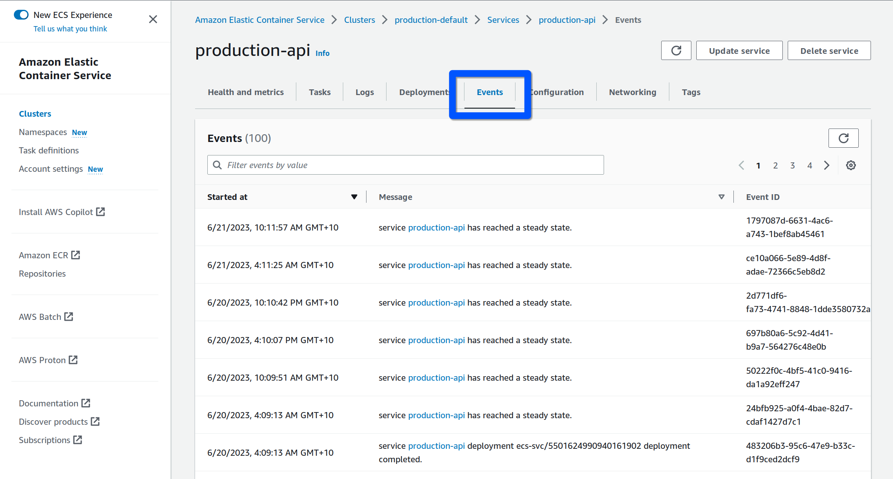
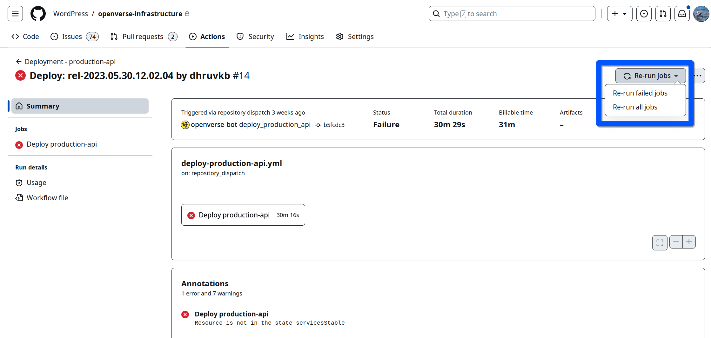

Deployments#
This document covers API and Frontend deployments. It does not include information regarding the ingestion server or our Airflow instance. If you need to deploy a specific application now, please see the deployment runbooks for each of our services:
Real-time Deployment Information#
Note
Deployment logs are currently held in a private repository but are linked here for the benefit of maintainers. If you need information regarding deployments generally or a specific deployment, please ping @WordPress/openverse-maintainers and someone can retrieve the information you need for you.
Frontend#
Environment |
Deployment Log |
URL |
Version Endpoint |
|---|---|---|---|
Staging |
|||
Production |
API#
Environment |
Deployment Log |
URL |
Version Endpoint |
|---|---|---|---|
Staging |
|||
Production |
Overview#
The Openverse Nuxt frontend and Django API are deployed using AWS’s Elastic Container Service. Both are encapsulated into single ECS services per environment. The overall approach of deployments is to generate a new task definition and to associate that task definition with the ECS Service. This causes the service to deploy the new task definition as a newly running task. Once the service has determined the new task to be healthy, it will redirect all traffic to the new task away from the old task. This is called draining. Once the old task is drained, it is spun down and the only task left running is the new one. The same process is followed when there are multiple tasks and each task is drained one at a time following our zero-downtime approach to deployments.
Note
The number of running tasks per active task definition may vary per environment but has no bearings on the deployment process. The size of the service is handled entirely on the infrastructure side. The process above is completely automated and contributors generally do not need to be acutely aware of the “behind the scenes” stuff going on, but it can be helpful for understanding what is happening during a deployment.
Deployment Workflow#
Deployments for all environments follow the same general workflow. This workflow is completely automated and auditable via GitHub Workflows.
Build and publish the docker image(s) for the application and tag appropriately for the deployment.
This happens inside the
ci_cd.ymlworkflow rather than the deployment workflows.
Download the template task definition from AWS for the environment and application being deployed. Render a new task definition based on the template, changing the following:
The new image tag(s)
Remove the
-templatesuffix from the family name (essentially removing the “template” identifiers present in the template)
Register the new rendered task definition to the ECS service.
This causes the ECS service to begin deploying the new task definition.
Wait for the ECS service to report that it is stable.
During this waiting period, the process described in the opening paragraph is orchestrated by ECS. This part is not transparent in the GitHub Workflows and will simply appear as a waiting step without any further information.
This process, from start to finish, generally takes less than 15 minutes. If it takes longer than 15 then something is probably wrong.
Failures#
Failures are automatically handled and the Openverse maintainers are notified. The GitHub Workflow log is the canonical source of truth of the record of our deployment attempts. See the table at the top of this document for links to these logs per environment.
If any of the steps described above fails, including the new task spin up and switch over, the deployment is deemed a failure. If the failure occurs while trying to start a new healthy task, the ECS service will automatically rollback to the previous task definition revision. Remember that the previous task is not drained and removed until the new task is determined to be healthy, so this rollback has zero downtime. Automated rollbacks do not create a new task definition revision, the service just uses the last healthy revision.
If the docker build fails then there is nothing to rollback. The failure needs to be investigated and the issue fixed for deployments to be possible again. This is unlikely to happen because we require valid Docker image builds as part of our CI. Nonetheless, given certain semantic merge conflicts, it is possible that a PR could pass CI and still cause a build failure when merged, so it is technically possible for a failure to occur during the first step.
Debugging Failures#
Tip
Please refer to the general ECS logging documentation for details about how to find logs for individual tasks.
An additional resource that is often helpful other than logs is the events list for a service. You can find that under the “Events” tab of the ECS service’s page:

This tab shows a chronological list of the 100 most recent “events”. Please refer to the AWS ECS documentation for information on what each of these events mean.
Re-running Failed Deployments#
Tip
To re-run a failed deployment with the same tag, simply re-run the failed deployment workflow in the WordPress/openverse-infrastructure repository. Do not re-run the release workflow in the monorepo or this will create duplicate tags. This approach is useful if you think the deployment failed due to a temporary fluke.

To re-run this failed production API deployment, re-run the failed jobs via the GitHub UI.
Staging#
Staging is automatically deployed any time code is merged to the main branch
of this repository. The frontend and API are deployed only when changes are
merged that pertain to each particular application. Staging deployments follow
the process above. The staging deployment workflows
tag images with the commit SHA.
Production#
Maintainers manually dispatch the production deployment via the Release app workflow. The workflow requires the tag of an existing Docker image to tag as the “released” image. It generates a date-based tag for the specific application being released, publishes a GitHub Release (which creates a git tag), tags the Docker image, and then triggers the deployment workflow. The workflow also opens a PR to add the changelog to the documentation site’s changelog directory. This needs to be manually approved and merged by maintainers. The person who triggers the release app workflow is pinged in the PR description to help with the visibility of the PR.
The same workflow is used to create production release images for the ingestion server. In that case the production deployment still needs to be handled via Terraform.
Rollbacks#
Even if the deployment process described above succeeds, sometimes we may realise that the deployed code is not behaving as we expected. In these cases it may be necessary to force an environment to be deployed to a specific version, usually the previous version of the application.
The same staging and production deployment workflows are used directly to rollback any environment for any service. Only members of the @WordPress/openverse-maintainers GitHub team are able to dispatch the workflows to completion. Anyone else who tries to dispatch them will have the workflow automatically fail.
The workflows require one input: tag, which must be a valid tag that exists in
the image repository for that application. The tag input is validated against
the available list of tags and the workflow will fail if the tag is determined
not to exist in the image repository. You can find a list of release tags for
specific apps by filtering git tags based on the tag prefix for the app:
$ git tag -l '<app slug>-*'
Replace <app slug> with api, frontend, or ingestion_server as needed.
After validating the tag and that the dispatcher is authorised, the Rollback workflow follows the deployment process described above, without building the Docker image as it reuses the existing image tagged with the input.
Environment Variables#
When deploying code that depends on a new or updated environment variable, you must follow the process below before that code is deployed. This is the only way to make the new or updated variable available for the code the depends on it. Please see the zero-downtime deployments document’s section on environment variables for an in-depth explanation of the rationale behind this process.
Update the template task definition for the service with the new or updated environment variable.
Request help from
@WordPress/openverse-maintainersif you’re unable to do this yourself (i.e., if you do not have the ability to make changes to our Terraform configuration)
Deploy the code that depends on the new or updated variable by dispatching the appropriate deployment workflow for the application and environment that was updated.
If the application only needs to be re-deployed to the already running-version, dispatch the workflow with the version present at the version endpoint for the application. See the “version endpoint” in the real-time deployment information tables above to determine the currently running version.
Future end-to-end test integration#
In the future we hope to integrate end-to-end tests into this workflow and to tighten the staging to production pipeline. Essentially, we would like the deployment pipeline to go something like this:
Merge PR to
main.Wait for staging to deploy.
Playwright tests automatically run against the new staging environment (frontend and live API).
While Playwright tests are running, the person who merged the PR should manually verify that their change behaves as expected.
After the Playwright tests are confirmed to have passed, unlock a “deploy to production” button somewhere that pushes the image currently deployed to staging into the production task definition.
Following this process would effectively mean that production gets deployed
every time code is merged to main. It reduces the turn around for new features
and bug fixes because they don’t have to wait for a new release to be manually
created.
We could more or less follow the process as described today just by creating a new release every time we’ve merged to staging and verified our changes, but there are a couple missing pieces that would need to be implemented to make this process easy to follow, to varying degrees of difficulty:
We need a GitHub workflow that runs the Playwright tests against the staging deployment automatically after staging is deployed. This will require some Playwright configuration tweaks and increased test timeouts due to network latency.
We would need to create a queue so that new staging deployments do not occur until the current staging deployment is live on production. This could be implemented by polling the
/version.jsonendpoints of both environments and only liberating a new staging deployment for new merges once the endpoints both report the samereleaseproperty.We would need to update the production deployment workflow to not create a new Docker build and instead just pull the current tag from the staging
/version.jsonendpoint.
Note that this workflow does make the process of merging a PR heavier than it is today. This comes with some benefits:
PRs will likely be more carefully tested as the consequence of merging them is higher and more immediate.
Bug fixes appear in production earlier.
Features can be rolled out with more care using feature flags and likewise more quickly.